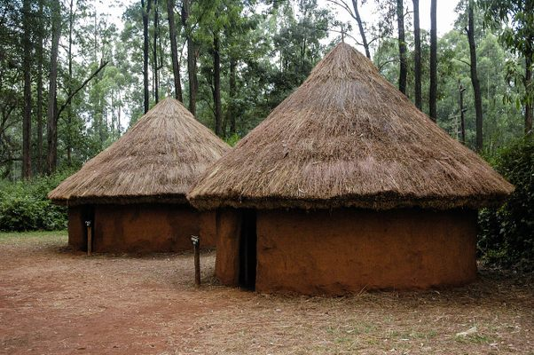
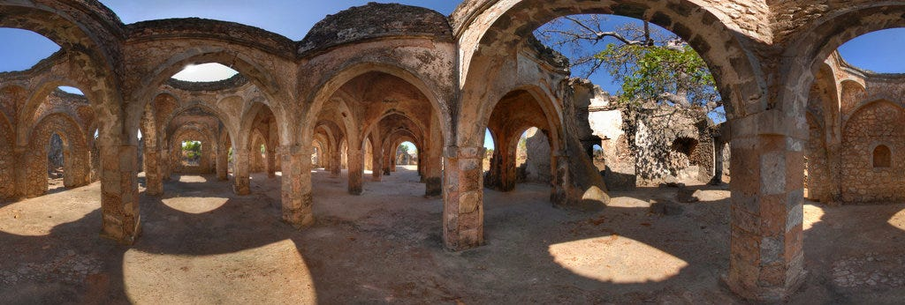
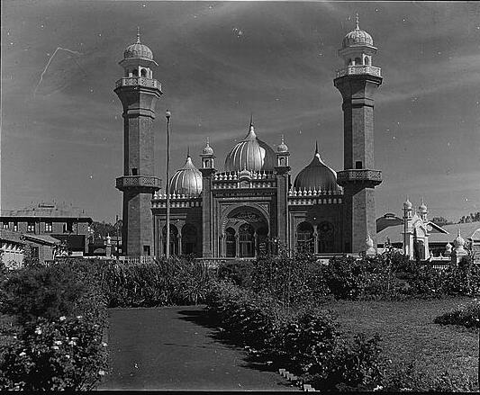

Indigenous & Traditional Spaces
Rooted deeply in local ecologies and communal structures. Utilizing immediate natural resources such as thatch, mud, structural timber, and ash—these organic layouts emphasized collective compound spaces and natural thermal regulation matching specific regional climates.

Swahili Coastal Architecture
Developed alongside Indian Ocean trade networks. Lime mortar plastering, coral rag masonry blocks, and towering defensive inner courtyards define the settlements of Old Town Mombasa and Lamu, blending regional structural traditions with Afro-Arabic design aesthetics.

Colonial & Administrative Infrastructure
Spurred by the progression of the Kenya-Uganda railway line. British administrative needs introduced rigid ashlar stone masonry masonry layouts, neoclassical motifs, sweeping multi-level verandas, and heavy reliance on pre-fabricated iron sheet components.

Modernism & Tropical Expression
Following 1963 independence, monumental structures utilized bold reinforced concrete structures and striking geometric forms to project national progress. Architects customized international structural styles for local climates using vertical sun louvers and open breeze pathways.